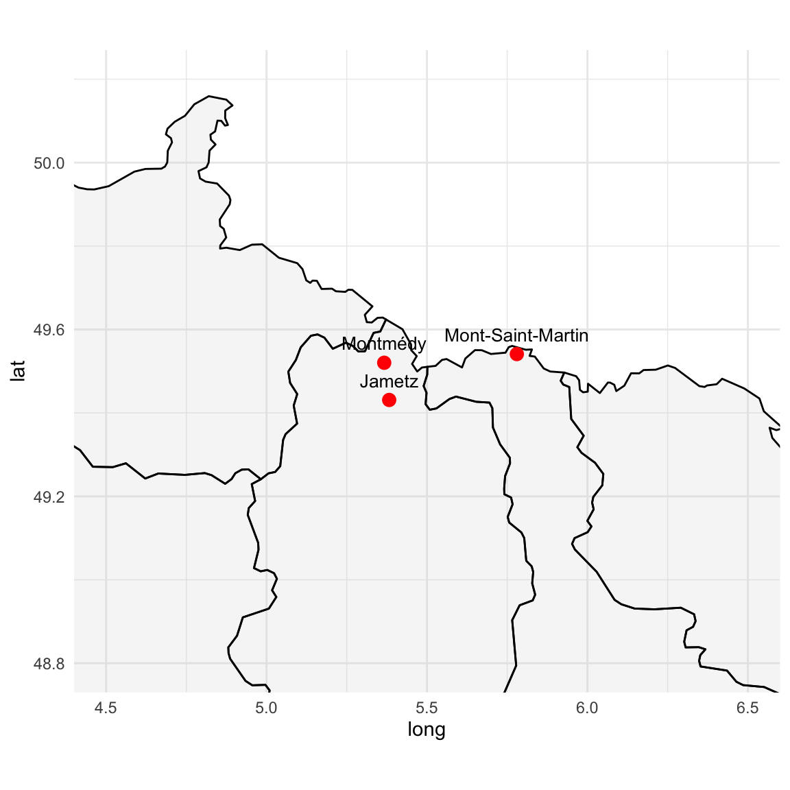

graph TD A1[Aline Julienne Joséphine Ambroise<br>1837‑1865<br>**Lingère et Piqueuse de bottines**] A2[Alfred Ambroise<br>24/12/1861‑?<br>**Ouvrier**<br>Né à Paris 14èeme] H1[Henri Hissette<br> 1827- <br>**Cultivateur**<br>Née à Hestroff, Moselle] H2[Elizabeth Koch <br>1830- <br>Née à Couches les Mines, Saône-et-Loire] H3[Catherine Hissette<br>1868‑?<br>Née à Hestroff] %% Alfred enfant naturel d'Aline H1 --> H3 H2 --> H3 A1 --> A2 %% Union entre Alfred et Catherine A2 --> M1[Union libre puis Mariage à Jametz-Montmédy 1889] H3 --> M1 M1 --> E1[Alfred-fils<br>1885‑?<br>**Ouvrier**] M1 --> E2[Albert<br>1886‑?<br>**Débardeur**] M1 --> E3[Léon<br>1890‑?<br>**Dégrossisseur**] M1 --> E4[Henri<br>1891‑?<br>**Ouvrier d'usine**] M1 --> E5[Arthur<br>1891‑?<br>**Employé de bureau**]
4 Alfred Ambroise (1861- ), Catherine Hissette (1868- ) et leurs enfants
4.1 Le couple Alfred Ambroise et Catherine Hissette
Henry Hissette, né en 1827, s’installe à Montmédy, dans la Meuse, où il devient cultivateur avec son épouse Élisabeth Koch, originaire d’Anzeling. Ensemble, ils auront neuf enfants, dont Catherine, née en 1868. La famille Hissette est d’origine alsacienne (His(s)ette 2023), enracinée dans les villages d’Anzeling et de Freistroff, où l’on retrouve dès le début du XVIIIe siècle François Hissette, né vers 1683–84, cordonnier de son état. C’est là qu’il épouse Anne Sabé (ou Annam Sabée) dans les premières années du siècle.
Petit clin d’œil à l’histoire familiale : Mathias Hissette, demi-frère d’Henry, né en 1822, embrasse une tout autre voie. Après des études de pharmacie, il reprend la célèbre pharmacie du Grand Cerf, place de la Cathédrale à Strasbourg — l’une des plus anciennes officines de France.
Pendant ce temps, à Montmédy également, vit Alfred Ambroise, fils de Julienne la lingère. Né à Paris, dans le 14e arrondissement, rien ne permet de comprendre clairement ce qui l’a mené jusque dans la Meuse. Placement ? Travail ? Coïncidence ? Toujours est-il qu’on le retrouve là, ouvrier d’usine, comme tant d’autres, et qu’il y rencontre Catherine Hissette. De leur union naissent deux garçons, Alfred (1885) et Albert (1886), avant leur mariage officiel célébré à Jametz, près de Montmédy. Ce mariage reconnaîtra les deux premiers enfants, nés hors mariage (voir l’acte de mariage). Le couple donnera ensuite naissance à trois autres garçons : Léon (1890), Henri (1891) et Arthur (1898).

La famille Ambroise–Hissette semble s’être installée à Mont‑Saint‑Martin et dans les environs dans la première moitié du XXᵉ siècle. On y retrouve notamment Alfred Ambroise et Catherine Hissette, dont le foyer familial, après le décès de Catherine, est au cœur d’un événement judiciaire local. Une partie de la fratrie Ambroise, composée notamment d’Albert, Henri, Léon et Jeanne, a vraisemblablement réclamé la vente par licitation de la maison située rue Victor‑Hugo à Mont‑Saint‑Martin—biens faisant partie de la communauté entre Alfred Ambroise et Catherine Hissette, décédée —afin d’en répartir l’héritage. L’opération, actée suite à un jugement autorisant cette démarche, s’est tenue le 24 janvier 1920 (voir l’article de l’est républicain). Cette initiative visait à permettre aux héritiers demandeurs de réclamer leur part du patrimoine familial, en obtenant une indemnité tenant compte également des dommages de guerre.
Notons que Jean-Alfred Ambroise (mon grand père) et André Ambroise son frère, apparaisent dans le jugement. Ils avant respectivement 6 et 5 ans à l’époque.
4.2 Les 5 fils d’Alfred et Catherine
Les cinq fils Ambroise — Alfred, Albert, Léon, Henri et Arthur — ont traversé la Grande Guerre de 1914–1918, et leurs dossiers militaires offrent un précieux aperçu de leur parcours de vie.
4.2.1 Les métiers des fils Ambroise au sortir de la guerre
En 1920, les fils Ambroise exercent des métiers divers, majoritairement liés à l’industrie locale :
- Albert Ambroise, débardeur à Frouard, est un ouvrier de manutention chargé de charger et décharger des marchandises, notamment dans les zones industrielles, sûrement dans la sidérurgie.
- Alfred et Henri Ambroise, ouvriers d’usine à Mont‑Saint‑Martin, travaillent probablement dans la sidérurgie locale, cœur industriel de la région.
- Léon Ambroise, dégrossisseur à Hayange (cantine Saint‑Jacques, n°45), intervient sur machines de laminoir: il élimine les parties grossières des métaux.
- Arthur Ambroise est mort en 1914. Il était employé de bureau, un poste administratif, signe d’une diversification professionnelle au sein de la fratrie.
Ce panorama professionnel met en lumière la forte implication de la fratrie dans le monde industriel lorrain, tout en soulignant une ouverture successive vers des emplois de bureau avec Arthur, illustrant l’évolution sociale de la génération.